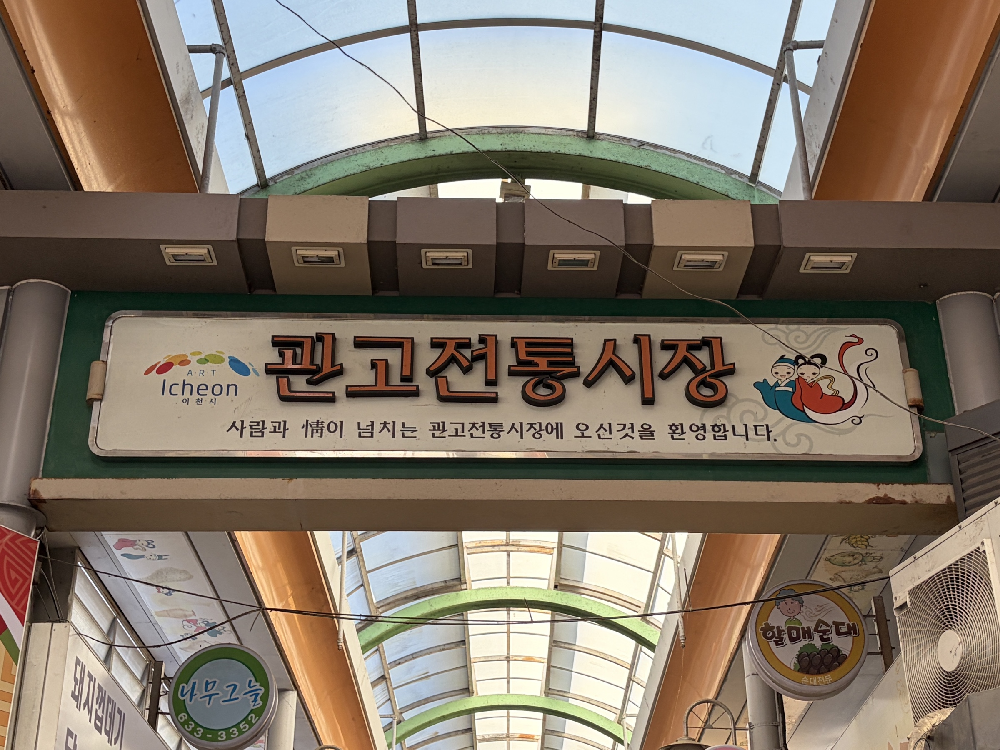

COURSE 01 약 3.5시간
VINTAGE ALLEY & BREAD · 원도심 감성 산책
도보 100% 안심 완주
원도심 투어 : 오래된 골목과 빵·커피 산책
관고전통시장의 정겨운 먹거리부터 명물 쌀베이커리 흥만소,
호수 멍때리기 좋은 설봉공원까지 차 없이 가볍게 걷는 힐링 코스
🏪
시장 구경
관고전통시장
☕️
빵·커피
우진·흥만소
🌲
호수 산책
설봉공원